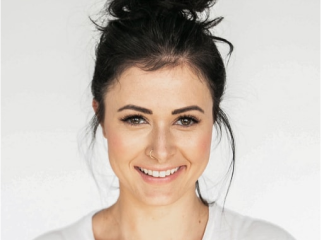

VKYC Started

Loading...
Show your front face
Show your left side face
Show your right side face
Show your face with eyes closed
Complete
Try Again
VKYC Completed!
Your video KYC process has been completed. Your application has been sent for approval
VKYC Completed!
Your video KYC process has been completed. Your application has been sent for approval